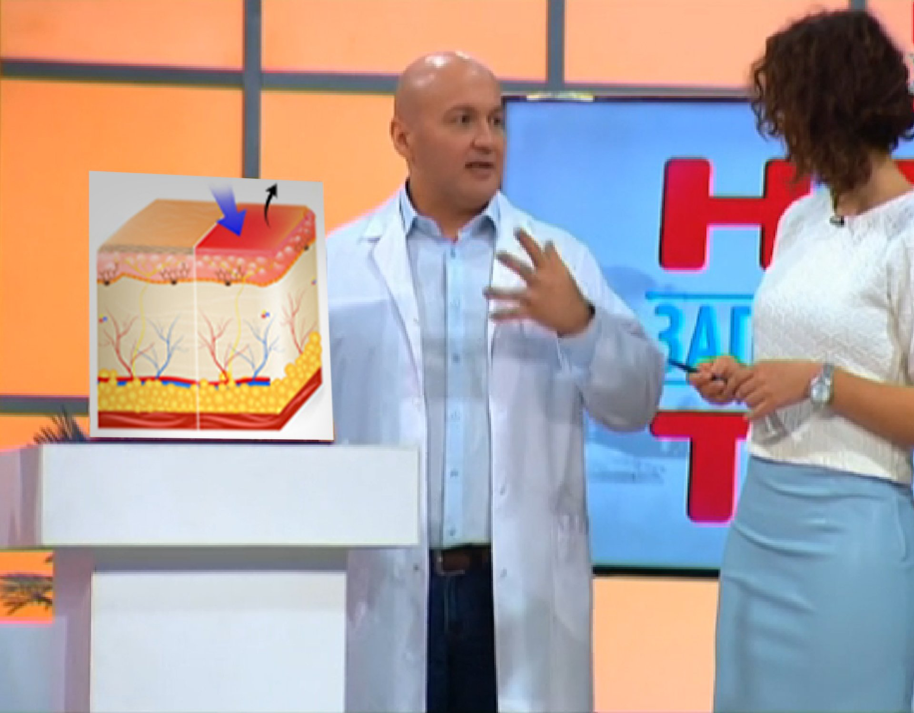
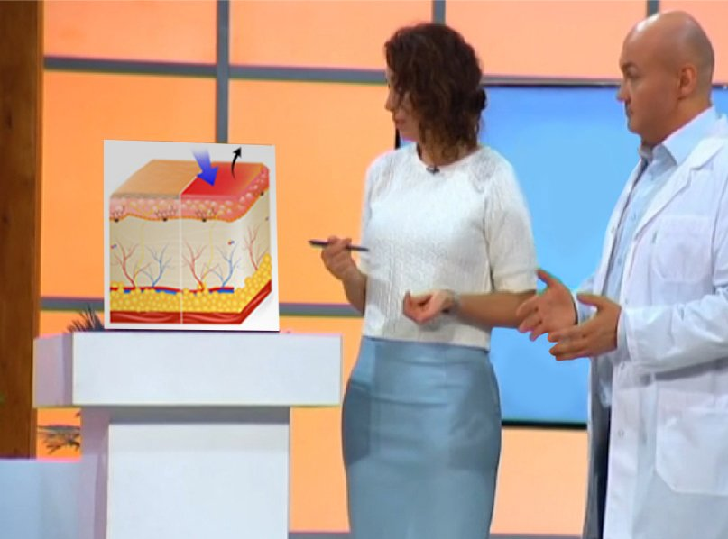
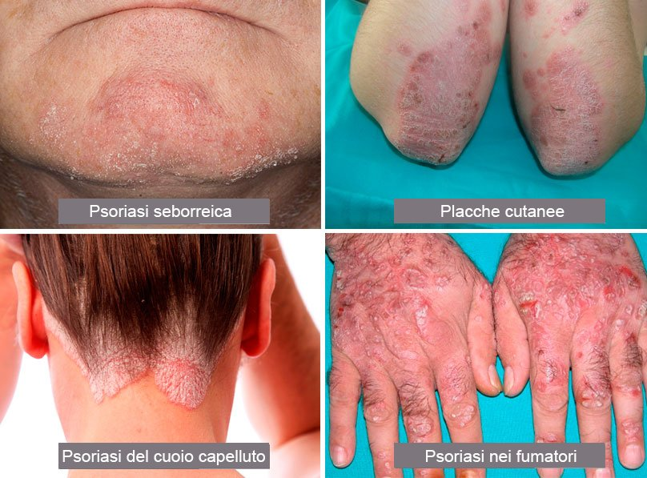
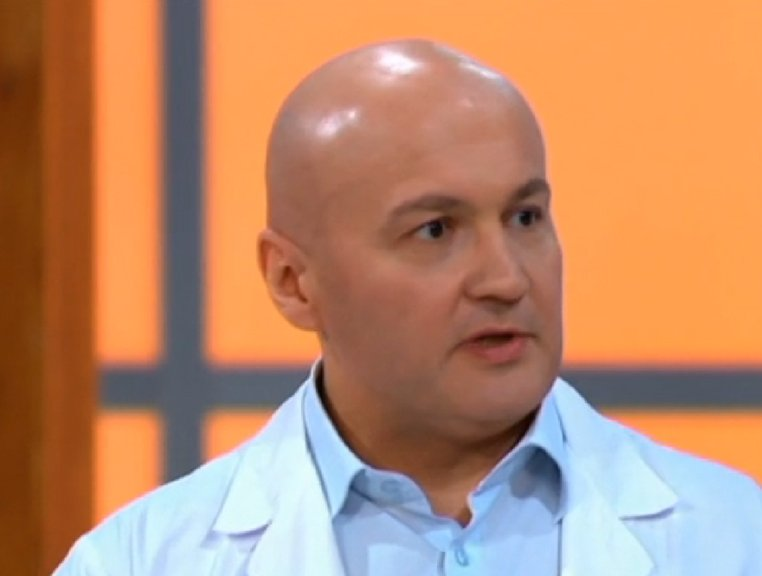
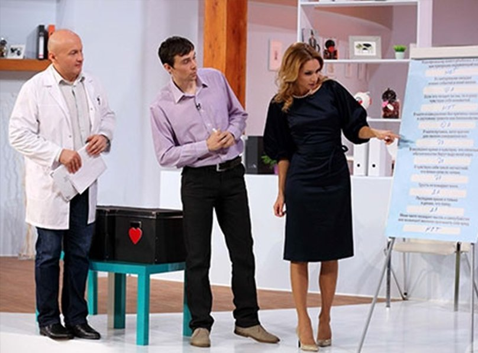
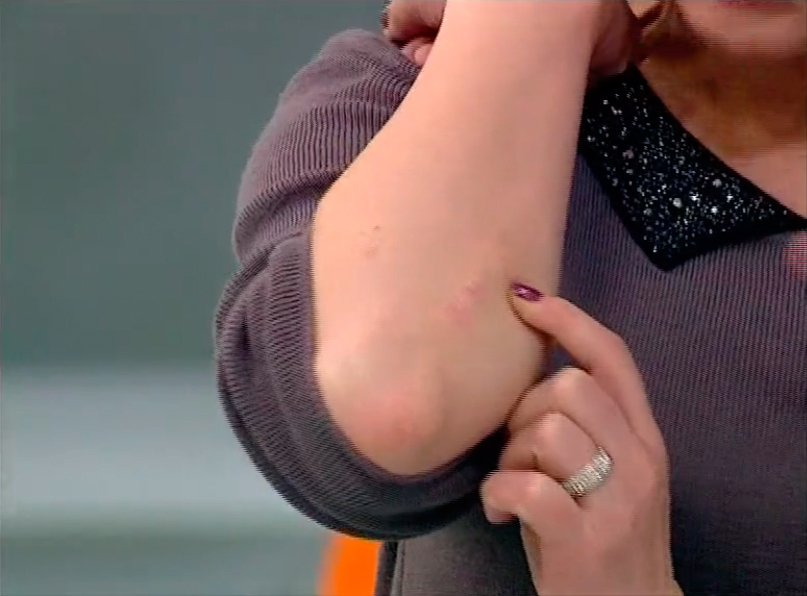

SALUTE
I SINTOMI DELLA PSORIASI SCOMPAIONO ALL'ISTANTE!
Straordinaria scoperta nel trattamento dei sintomi della
psoriasi
L'idea che i sintomi della PSORIASI non possano essere completamente curati si è insinuata nella mente delle persone molto tempo fa. Per ottenere un po' di sollievo bisogna assumere costantemente dei costosi medicinali. Ma si tratta davvero dell'unica opzione? Indaghiamo più a fondo!
Il dr. Alessandro Richeri e il programma TV "Una salute migliore" vi parleranno del trattamento dei sintomi della PSORIASI
Buongiorno! Sono il dottor Alessandro Richeri e questo è il mio programma "Una
salute migliore" , dedicato ai problemi di salute delle persone. Come si fa a
distinguere tra i veri sintomi di una malattia e quelli finti? Cosa bisogna fare per
rimanere in salute il più a lungo possibile?
L'argomento della puntata di oggi è
la PSORIASI!
La psoriasi, o alphos, è una
malattia cronica non infettiva e non contagiosa. Si tratta di un'infiammazione cutanea
attualmente considerata autoimmune.
Di solito, la psoriasi è caratterizzata da
macchie di tessuto cutaneo anormale coperte da placche in rilievo di pelle rossa e secca.
Queste placche sono le cosiddette papule.
Le papule sono le parti infiammate di
cute, nei cui strati più profondi si verifica una proliferazione di linfociti, macrofagi,
cheratinociti della pelle e un'eccessiva angiogenesi (il processo di formazione di nuovi
capillari).
La maggior parte delle persone crede ancora che la psoriasi sia una malattia contagiosa. Scopriamo tutta la verità su questa misteriosa malattia e vediamo chi rischia di contrarla.
La dottoressa Franca Cacciari mi aiuterà in questo difficile compito.

Franca Cacciari
Medico dermatologo, PhD.
Alessandro Richeri: "Franca, potresti parlarci della malattia e di cosa la scatena?"
Franca Cacciari: "Le cause della psoriasi sono ancora sconosciute. All'inizio del 19° secolo, dato che molti membri soffrivano di questa malattia, la famiglia Rothschild offrì un grande premio in denaro. Allora, quella somma di denaro superava quella assegnata con il Premio Nobel e sarebbe stata pagata a qualsiasi persona o entità in grado di identificare le cause esatte della psoriasi."
Alessandro Richeri: "Tuttavia, mi pare che tu abbia già menzionato una delle cause, la predisposizione genetica, che si osserva nel 40% delle persone affette da psoriasi. Possiamo dire che non conosciamo le cause, ma i fattori favorevoli allo sviluppo della malattia sì. Analizziamoli in dettaglio."
 Alessandro Richeri: possibili cause della PSORIASI
Alessandro Richeri: "Vediamo cosa abbiamo qui.
L'ereditarietà,
ovviamente. Beh, l'abbiamo già nominata.
Poi il fumo. Forse il fumo non è la causa
primaria della psoriasi, ma la malattia avrà maggiori complicazioni se si fuma. I palmi
delle mani e le piante dei piedi ne risentiranno di più. Il fumo può scatenare lo sviluppo
della psoriasi, soprattutto sulle unghie.
Il sovrappeso e l'obesità sono altre
cause della psoriasi.
Qui non è riportato che anche lo stress è una causa
comprovata della psoriasi. Da cosa dipende? Ci sono molte teorie, basate soprattutto
sull'immunologia, perciò i trattamenti si basano anch'essi su questa scienza.
Vediamo che aspetto può avere."
 Tipi di psoriasi.
Franca Cacciari: "Il primo tipo è la psoriasi seborroica, che spesso non
viene diagnosticata correttamente dai medici.
Il secondo tipo è la psoriasi
regolare, che causa le papule cutanee le quali di solito si presentano sui gomiti e sulle
ginocchia.
Il terzo tipo è la psoriasi che colpisce il cuoio capelluto. Quando
questo tipo di psoriasi colpisce i bambini, a volte viene erroneamente identificata come
dermatite atopica.
E il quarto tipo si verifica quando le manifestazioni della
malattia si palesano sulle braccia, soprattutto di fumatori incalliti. Quando si vedono
palmi e piante gravemente colpiti, si è in presenza di una persona che fuma molto."
Alessandro Richeri: "L'unica cosa che vorrei aggiungere a quanto è già stato detto è che la psoriasi può colpire non solo la pelle, ma anche le articolazioni, sia quelle più grandi che quelle più piccole, come le articolazioni delle dita e degli alluci. Questo è molto esemplificativo."
 Alessandro Richeri: La psoriasi può colpire le piccole articolazioni.
Alessandro Richeri: "È giunto il momento di accogliere la nostra paziente. Benvenuta, Caterina! La prego, ci racconti la sua storia!"
Caterina: "Soffro di psoriasi regolare sui gomiti. Sfortunatamente, la malattia è particolarmente attiva d'estate."
Alessandro Richeri: "Strano. Di solito, il sole previene la progressione della malattia."
Franca Cacciari: "Questo vale per la cosiddetta psoriasi invernale. Quando una persona viene colpita da questo tipo di malattia ed è spesso esposta al sole durante i mesi estivi, l'esacerbazione della psoriasi è impossibile. Tuttavia, in questa situazione abbiamo un brutto tipo di psoriasi, quella estiva, la cui condizione si complica se influenzata dal sole. Si possono usare tutti gli altri trattamenti, ma non la luce del sole.
Caterina: "Soffrivo anche di psoriasi articolare. Voglio dire che l'esacerbazione della malattia a volte la portava anche ad espandersi alle articolazioni. I gomiti mi facevano così male che non riuscivo nemmeno a sollevare una pentola. Ero molto limitata nei movimenti e soffrivo di dolori acuti ai gomiti."
 Caterina: Psoriasi nella piega del gomito
Alessandro Richeri: "Ok. Ora parliamo dei trattamenti."
Franca Cacciari: "Quando Caterina si è rivolta a noi, le è stata diagnosticata una tipica esacerbazione della malattia che aveva colpito le pieghe dei gomiti. Le è stato prescritto un trattamento con il nostro nuovo rimedio, che ha superato tutti i test clinici richiesti e la cui efficacia è stata dimostrata. Si tratta di . Caterina, potrebbe parlarci del trattamento?"
Caterina: "Non è stato per niente complicato. La crema viene venduta in tubetto e contiene delle dettagliate istruzioni per l'uso. Basta spalmare la crema sulle zone colpite della pelle e aspettare che si assorba completamente. Quando ho iniziato a usarla, ho sentito un sollievo immediato. L'irritazione diminuiva ogni giorni di più."
Alessandro Richeri: "Caterina, potrebbe dirci quali risultati ha ottenuto dopo 7 giorni di trattamento con questa crema?"
Caterina: "Con piacere! In una settimana i sintomi della psoriasi sono spariti quasi completamente e la malattia ha smesso di colpire le articolazioni."
 Caterina: Il risultato dell'utilizzo della crema per 7 giorni.
Franca Cacciari: "Vorrei aggiungere che la crema non cura completamente la psoriasi. Si tratta di un rimedio naturale che rimuove l'irritazione, nutre e lenisce la pelle e impedisce un'ulteriore diffusione della malattia; può essere quindi usato senza restrizioni da chiunque. Questo prodotto riduce gradualmente il numero di cellule in divisione, il che aiuta a prevenire l'effetto di desquamazione e normalizza la microcircolazione negli strati superiori dell'epidermide. Di conseguenza, in 2 o 3 settimane, a seconda della gravità della malattia, i sintomi scompaiono.
Alessandro Richeri: "Come potete vedere, la strada per tornare in salute non è così tortuosa. Potete ordinare qui . È il sito ufficiale del produttore."
La crema autentica può essere ordinata solo sul sito ufficiale indicato qui sotto. Il prodotto gode di tutti i certificati obbligatori e la sua efficacia è stata dimostrata. Diffidate delle imitazioni. I prodotti contraffatti non avranno alcun effetto.
 La crema vi aiuterà a sbarazzarvi dei sintomi della
psoriasi in qualche settimana
La crema vi aiuterà a sbarazzarvi dei sintomi della
psoriasi in qualche settimana
Alessandro Richeri: "Grazie, Caterina!"
Auguro a chiunque soffra
dei sintomi di questa malattia di potersene sbarazzare. Questo vi farà sentire felici e in
salute.
Ho provato diversi metodi di trattamento, ma l'effetto non è mai durato a lungo. Quando ho scoperto questa crema, l'ho ordinata subito. La uso già da 2 settimane e le manifestazioni della psoriasi sono quasi scomparse. Grazie, Alessandro!
Questa crema e' incredibilmente utile. Mi ci sono voluti 9 giorni per guarire dall'infiammazione. Grazie !
Ciao a tutti! Voglio esprimere la mia più sincera gratitudine al produttore della crema e ad Alessandro Richeri! La crema mi ha aiutata molto!! Sono migliorata quasi subito. Inoltre, è migliorato anche il mio umore, ora ho voglia di vivere e di godermi la vita! Uso la crema già da un mese. Grazie mille!
Non potevo non rispondere a questo messaggio... Prego, Marta, sono contento per lei e spero che questo trattamento cambi la vita di molte persone. Gentili saluti, Alessandro.
Anche io ho ordinato la crema e l'ho ricevuta per posta dopo 8 giorni. Comincio subito il trattamento e vi terrò aggiornati sui risultati.
Soffro di psoriasi da una vita. Spero che questa crema mi aiuti, la ordino subito!
Ho ordinato la crema per mio marito. I risultati hanno iniziato a palesarsi dopo 3 giorni. I focolai della malattia hanno cominciato a ridursi e a diventare meno intensi. Mio marito continua ad usare la crema...
Salve, queste informazioni sono molto interessanti. Sono scettico di natura, ma voglio provare questa crema.
Ho visto molti commenti circa questa crema ma non sapevo se comprarla o no. Ma se è Alessandro Richeri a raccomandarla penso che sarebbe meglio farlo.
Non so se questa crema può aiutarmi... Soffro di psoriasi da molto tempo.
Massimo, non cura i casi gravi della malattia; tuttavia, rimuove efficacemente l'irritazione lasciando la pelle nutrita e idratata. Personalmente gliela consiglio perché ha già aiutato molte persone a trovare sollievo!
Ho trovato questo articolo per caso. E cosa vedo? Che pubblicizza la mia crema! Non sono io a produrla, ovviamente, voglio solo dire che tempo fa l'ho comprata per mio marito e l'ha aiutato! Si è sbarazzato dell'irritazione in 2 settimane!
Mi sono liberata dei sintomi della psoriasi in 10 giorni! Fantastico! Ringrazio molto il produttore!
Difficile da credersi... Però se così tante persone dicono che funziona, allora dev'essere vero. Comincerò a usarla domani!
È un miracolo. Ho ordinato la crema subito dopo averne sentito parlare e magari fosse successo 5 anni fa. Mi sono quasi dimenticato di aver mai sofferto di psoriasi. Grazie, Alessandro!
Mi ricordo che una volta me ne ha parlato mio fratello! Dopo aver letto che la raccomanda anche una persona tanto rispettabile, userò questa crema per trattare i sintomi della psoriasi!
Grazie, mi ha aiutata molto! La mia situazione non era molto grave fortunatamente e ora sto benissimo!
Le chiazze sono svanite senza lasciare traccia, e in soli 10 giorni! Grazie per questo miracolo! Buona fortuna a tutti!
E' da molto che sogno di liberarmi della psoriasi. Grazie mille per le informazioni, effettuero' l'ordine oggi stesso. Speriamo che la crema non sia andata esaurita.
Mi sono liberato dei sintomi della psoriasi 6 mesi fa, non appena ho scoperto questa crema, quindi la raccomando a tutti. Le aree colpite del mio corpo erano numerose, ma ci sono voluti solo 20 giorni per trovare sollievo dall'irritazione.
Ho deciso di ordinare questa crema a un prezzo più conveniente su un altro sito. Alla fine ho ricevuto una strana pomata dalla confezione coperta di ideogrammi cinesi. Non ha avuto alcun effetto. In seguito, ho ordinato sul sito ufficiale e ho ricevuto il pacco in poco tempo. Non mi sono pentito di averlo fatto, uso la crema da 5 giorni ed è molto efficace.
Vorrei ricordare che la crema deve essere ordinata SOLAMENTE sul sito ufficiale .
Diffidate dei falsi.